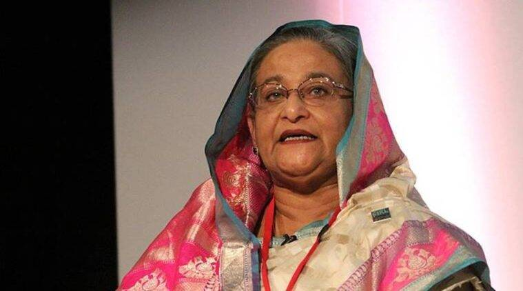

Bangladesh PM Sheikh Hasina: ‘India should show more generosity when
it comes to the water-sharing dispute’Most Recent

Bangladesh Prime Minister Sheikh Hasina Sunday termed India a ‘trusted
friend’ and said the ‘long standing’ water-sharing dispute between the
two countries should be resolved to ease the problems the citizens of
her country are facing. The 74-year-old leader is scheduled to visit
India between September 5 and 8, during which she will meet with
newly-sworn in President Droupadi Murmu and Vice-President Jagdeep
Dhankar, and hold bilateral consultations with Prime Minister Narendra
Modi. She last visited India before the coronavirus pandemic in
October 2019.Speaking to news agency ANI, Sheikh Hasina said: “We are
downstream, water is coming from India. So, India should show more
generosity. Both countries would be beneficiaries. Sometimes, our
people suffer a lot because of this, especially the Teesta River. We
found that PM [Narendra Modi] is very eager to solve this but the
problem is in your country. We share only Ganges water but we have 54
other rivers. It’s a long-standing problem and should be resolved.”
She also thanked PM Modi for India’s Vaccine Maitri programme, and
termed India’s role in the evacuation of Bangladesh nationals who were
stuck in war-hit Ukraine a “friendly gesture.”